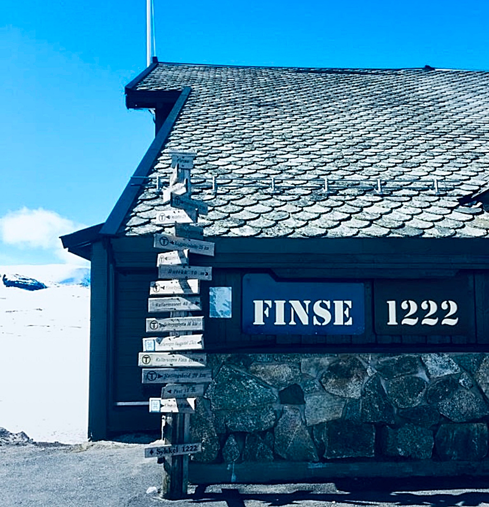

영화 속 이야기 스타워즈와 핀세를 연결해보면, 핀세는 단순한 촬영지가 아니라, '착각이 무너지는 공간'인 셈입니다. 루크는 이 얼음 행성에서 처음으로 자신의 한계를 마주합니다. 그 얼음 행성에서 루크는 승리의 영웅이 아니라, 아직 완성되지 않은 자신을 발견하는 순간이었습니다. 핀세는 외부의 황야입니다. 황야의 호수는 내부의 황야입니다.
베델스 비치를 배경으로 하는 《피아노》는 침묵 속에서 자기 목소리를 찾는 이야기입니다. 에이다는 비록 피아노를 잃지만 그 덕분에 자기를 찾았습니다.
루크는 이미 영웅으로 사람들의 박수를 받던 존재였으나, 2편을 통해 그 영웅을 철저히 부숴집니다. 더 큰 사람이 되기 위해서는 먼저 '자기가 이미 큰 사람이라는 착각'이 깨져야 한다는 걸, 저는 그 장면에서 읽었습니다.
바로 이 부분이 NUN의 길과 연동됩니다. 에이다도, 루크도 모두 자기가 생각한 이미지를 잃습니다.

그것은 상실을 통해 자신이 얼마나 작은 존재인지 깨닫는 일입니다. 잃었기 때문에 비로소, 가장 소중한 것이 무엇인지 알게 되는 것 같습니다.
이 점에서, 상실을 통한 배움의 길 아인과 자아의 정체성을 내려놓는 NUN의 경로가 서로 연결되어 있다는 걸 느낍니다.
그러므로 '에츠 하하임 티율'은 "깨달음의 기록"이 아니라, 착각이 하나씩 벗겨지면서 시선이 바뀌는 것에 관한 기록이라고 말하고 싶습니다.

핀세역의 번호는 1222였습니다. 그 숫자를 오래 들여다보다가, 어느 순간 106이라는 숫자가 떠올랐습니다. 눈(נון)의 완전한 철자, 50과 6과 50이 합쳐진 그 숫자였습니다. 실수로 내린 역이 아니라, 이미 예고되어 있던 부름이었다는 걸 그때는 몰랐습니다.
저는 잘못내린 핀세 덕분에 제 안에 차가운 행성을 보았고, 어느 정도 성장했다고 한 저의 착각을 벗을 수 있게 되었습니다.
황야의 호수를 연결하는 아인의 시선을 통해, 내면에 초라한 저를 보았습니다. 그리고 그 시선을 인정했을 때, 깨어날 때를 위해 준비한 물이라는 황야의 호수를 경험할 수 있었습니다.
이 제국의 역습을 도입한 것은, 잘못 내린 정거장이 되었던 핀세에서의 씁쓸한 추억때문이었습니다. 루크가 에고의 팽창된 자아와 실제를 구분하지 못했던 것처럼 저 역시 그와 같았기에. 제가 핀세라는 이름의 원래 뜻인 황야와 호수에 몰입된 이유도, 얼음의 행성 호스와, 그 속에 간직한 녹으면 물이 되는 극단적인 대비를 말하고 싶었던 것입니다.
차가운 눈(Ayin)이 풀릴 때, 자기 안에도 따듯함이 있다는 것을 발견할 수 있다는.
비록 치명적 실수를 했지만, 핀세(Finse)의 옛 이름, 황야의 호수라는 뜻을 복기하는 과정에서, 아인의 경로가 시선의 교정이 일어나는 곳이라는 사실을 배울 수 있었습니다.